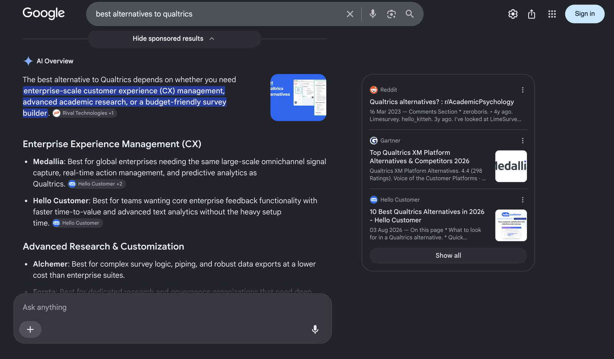
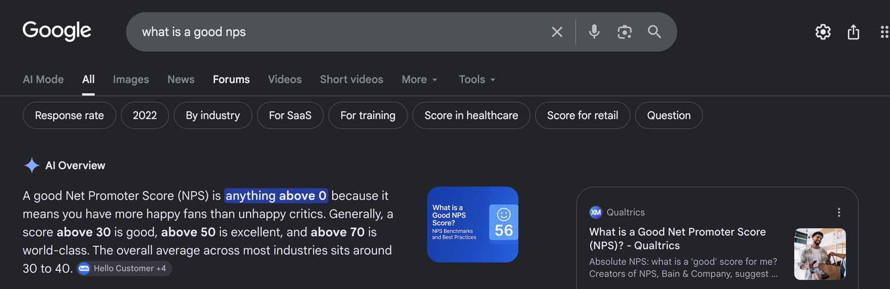
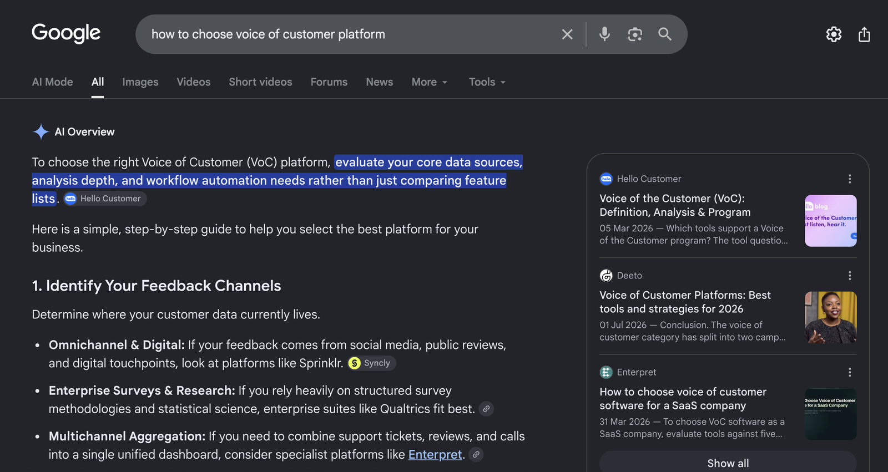
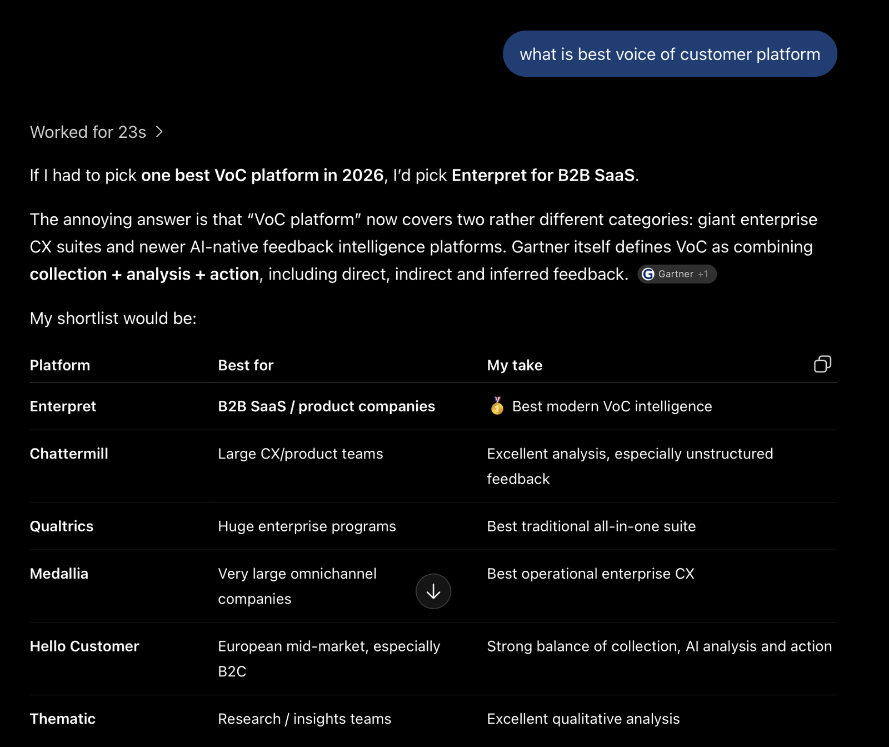

from page four
to the answer box.
Hello Customer is a voice of customer platform from Belgium. In the summer of 2026 I repositioned the brand, rebuilt the whole website in three languages with search engines and AI answer engines in the room, and then cleaned up everything around it. This is what the first seven weeks look like, with the data. The new site went live on 18 July 2026 and every number here was exported on 4 September, so read it as an early reading, not a final one. SEO compounds; this is the start of the curve.
ask an ai about voice of customer platforms. hello customer is in the answer.
Four screenshots from the first week of September 2026, unedited. The same questions in May came back with a different set of names.

"best alternatives to [the market leader]." Listed in the enterprise CX section next to the category's biggest names, and the third source card is Hello Customer's own alternatives article, published on 3 August. The comparison page did exactly the job it was built for.

"what is a good nps." The definition sentence is sourced "Hello Customer +4". This is one of the highest-volume questions in the category, and the site's rewritten NPS cluster is the reference.

"how to choose voice of customer platform." The opening line of the answer is cited to Hello Customer, first source card. The category we repositioned into, answered by the site we built for it.

"what is best voice of customer platform." In a shortlist of six, alongside the two largest enterprise suites and the newer AI-native tools, tagged "European mid-market" with "a strong balance of collection, AI analysis and action". In the July baseline, unbranded English prompts mentioned Hello Customer zero times out of fifteen.
in may, google thought the site was about its customers' logos.
When I opened Search Console, the terms bringing the site the most impressions were luminus, colora and securitas. Not the product. The logos of three customers, sitting on a customers page that happened to rank first for them. Nearly a quarter of all impressions came from people looking for a company that wasn't Hello Customer.
The site's title was "Business critical insights through feedback". It's a decent sentence. Nobody types it into anything, and no model files it under a category.
The average position across everything Google showed the site for was 38. Page four. In AI Overviews, the site earned around 200 impressions a day, almost all of them in the Netherlands and Belgium. The US and the UK barely registered. And in the baseline I ran in July, unbranded English prompts to ChatGPT mentioned Hello Customer zero times out of fifteen.
So the problem wasn't "not enough content". The site had 280 blog posts. The problem was that nothing on it said, in the words a buyer or a model would use, what the company is.
of all impressions were people searching for a customer's name or logo. Struck-through rows are that traffic. Bars are relative; hover for the share.
reposition first. then rebuild everything, with the crawler and the model in the room.
I don't think you can bolt search onto a finished site. The positioning decides the keywords, the keywords decide the page architecture, and the architecture decides what a model will ever cite. So the order was: category, then pages, then everything behind the pages.
one intent per page, named the way people search
Pages used to be named after features. Buyers search for problems. Every page got one job and a title a stranger would type.
the category in the title, everywhere
"Voice of customer platform" in the homepage title, the hubs, the schema and the llms.txt. If you want to be filed under a category, say the category.
be the comparison
Buyers ask for alternatives to whatever they already use, and models answer with lists. So the site now has the honest list, category by category, in three languages, and the set keeps growing. Comparison pages went from 9% to 22% of all AI impressions.
answer the question on the page
FAQ sections with FAQPage schema on every product page, article schema on every post, and an interactive calculator inside the article that explains the metric it calculates. The page does the thing it describes.
one clean description for machines
Organization, WebSite and SoftwareApplication schema, deduplicated and consistent across the site. llms.txt, IndexNow, an updated robots.txt, hreflang, clean canonicals, and a render-blocking script nobody used removed.
update the old, retire the rest
Older pages were refreshed where they still answered a real question, and retired and redirected where they didn't. Less for the crawler to waste a budget on, and the model reads a site that agrees with itself.
Positioning and the product pages.
Localising and launch. The SEO and AEO work starts.
More SEO and AEO content, in three languages.
And it continues. This page is the first measurement, from the 4 September exports.
less of the wrong traffic. more of the right kind.
Search Console, the same 28 days a year apart: August 2025 against August 2026. Percentages, because the point isn't the size of the site, it's the shape of what changed.
The customer-logo searches went from nearly a quarter of impressions to under one percent. That traffic was never going to buy anything, so I let it go, and it's the reason the total impression count looks flat while everything inside it moved.
What replaced it: the site now earns impressions on 57% more pages, sits on page one for 2.2 times as many queries, and clicks from non-brand searches are up by about a third. The "voice of customer" family of queries doubled in count, grew 78% in impressions, and moved from page six to page three on average.
Keep the calendar in mind: the 2026 window starts eighteen days after launch, so this is Google's first read of the new site, not its settled opinion.
three times the ai visibility, and it stopped being a benelux story.
Google's generative AI report only started reporting in mid-May 2026, so the earliest clean baseline is 18 May to 1 June, seven weeks before launch. Against 5 August to 1 September, per day, because the windows are different lengths.
Impressions in AI Overviews and AI Mode roughly tripled per day. The number of pages being pulled into AI answers grew from 198 to 315, and the number of countries from 101 to 152.
The bigger change is where. In May, three quarters of AI impressions came from the Netherlands and Belgium. In August the United States was the joint-largest market, at more than seven times its May level, and English pages did five times their May level. The comparison pages alone moved from 9% to 22% of everything.
Same site, same product, seven weeks in. What changed is that the pages now say what the company is in the words the model was already using. I'll re-measure the same panel each quarter; the interesting number is the one after this one.
cited in one answer out of four
Bing's report doesn't give a before, so this one is a snapshot. Across 146 buyer questions where Copilot grounded its answer on hellocustomer.com, the citation-weighted share is 24.5%. On 65 of those questions the site is in at least a quarter of the answers, and on ten it's in at least 40%. Below, the same report by theme: how the citations split, and how often the site is in the answer for each.
what i'd tell you, if this were your site
positioning is a search decision
The category name in the title did more than any single page. Before you write anything, pick the word buyers and models already use for what you are, and then say it, plainly, in the places machines read first.
one intent per page, and mean it
Feature names squatting on keywords, three schema blocks disagreeing with each other, ten product pages with no FAQ. None of it is glamorous to fix. All of it is what a crawler and a model actually see.
be the comparison
Buyers ask "alternatives to X" and models answer with a list. Write the honest list yourself, in every language you sell in. The comparison pages went from a tenth of AI visibility to nearly a quarter in six weeks.
update your old content, retire the rest
Old pages don't get better by being left alone. Refresh the ones that still answer a real question, on a schedule, and let go of the ones that don't. Nobody needs the ebook from 2019, and neither does the crawler. A site that agrees with itself gets cited more than a big one.
I did this hands-on: the positioning, the pages, the schema, the redirects, the calculator inside the article. With Claude, extensively, which is how one person rebuilds a site in three languages in seven weeks. And I'll say it once more because it matters: this is seven weeks of data. It's enough to show the direction, not the destination. If you'd like the same done to yours, the button is below.
what is aeo, answer engine optimisation?
how long did the results take?
where do the numbers come from?
did organic traffic go up?
want your site
in the answer?
Book a call. We look at what Google and the models currently think your site is about, and whether that's what you'd like them to think.